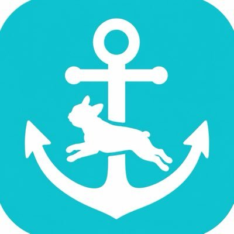

今週搭載予定のロマン機能をチラ見せ！
右クリック長押しから展開される未来感あふれる動作。なるべく直感的に使っていただけるよう、絶賛調整中です！
いずれはユーザー様ご自身でカスタマイズできるよう、調整を進めていく予定です！
v0.3.1公開しました
PDFの作業を、
PDFの作業を、
もっと自由に
ページを整える。書き込む。大切な情報を守る。
いつものPDF作業を、ひとつの無料アプリで。
- 利用料無料
- 会員登録不要
- 広告なし
PDF MARINはWindows用アプリです。
Windowsのパソコンから、このページを開いてください。
リンクをコピーしました。
操作のデモ35秒・音声なし

PDF MARIN@PDFMARIN
固定
PDF MARIN βをMicrosoft Storeで公開しました！🌊
直感的でわかりやすいUI。
使うたびにワクワクする体験。
1つ1つの機能の品質。
この3つを大切に、これからも最速でアップデートを続けていきます。
いつもたくさんのご要望・ご報告をありがとうございます😭
本日の夜、アップデート版を公開します！
ありがたいことに、最近は多くのご要望をいただいております🔥
そのぶん、修正後の動作確認や操作まわりの調整が追いついていない項目もあり、使い勝手の面で粗さが残っている箇所があるかもしれません🙇♂️
今週の連休で、いただいた要望、全体の動作確認と操作性の見直しをまとめて行う予定です！
何か少しでも気になる点があれば、お問い合わせからご連絡いただけると助かります🔥
マーケティングや広告活動などガン無視でひたすらに修正とクオリティアップに努めてる。
いいものを作れば人集まるだろ理論🫠
【追加機能】
PDFの見たい部分だけを、別ウィンドウに表示できる機能を追加しました！
図面の表や注記を横に置いたまま、別のページを確認できます。ページを何度も行き来せずに作業できます。
現在はUI、UX調整中になりますが、最新バージョンでは右クリックの中の「この紙の一部を窓に出す」から使用できます。
最近バージョンリリースしました！
不具合やUI関係を中心にかなりの量の修正を入れました🔥
印刷関係等、制約が多くご要望通りになってないところも一部ありますが、送付いただいた内容は一通り対応できたかと思います！！
また動作で不具合や使い勝手が悪い点があれば、どしどし報告をお願いします🙏🙏
たくさんのご要望や修正点をお送りいただき、ありがとうございます🙏
いただいた内容はすべて確認し、できる限り反映できるよう努めています！
基本的には修正後に動作確認を行っていますが、高度な機能については、該当する資料がないと十分に確認できない場合があります。
同じような不具合や修正点が見つかりましたら、再度教えていただけると助かります。機密情報を含まない資料であれば、該当資料と「どのような動作になってほしいか」を詳しくお送りください。
全力でご希望の動作に近づけるよう調整します🔥🔥
今後ともよろしくお願いいたします。
今週末はいただいたご要望の反映と不具合の修整、UI関係の調整を行います！
少しでも気になる点があれば箇条書きでも良いのでご連絡いただけると嬉しいです😭
ホームページ、アプリ内の問い合わせから匿名で送信できます！
不具合報告やご要望たくさんいただきありがとうございます！
ハイスピードで修正し、さらにクオリティ高めていきます！！
リポスト
【今日の人気記事】商用も無料のPDF編集ソフト「PDF MARIN」が登場、黒く塗るだけではない本物の墨消しに対応／「Claude Code」と連携するAI機能も開発中
現状は追加機能の検証とともに、基本機能を1つずつ試しながら微調整しているところです！
基本機能の使い勝手もクオリティを上げていきたいので、どんなに細かいところでもご指摘いただけると助かります🔥🔥
ご要望も多数いただきありがとうございます！！
順次対応させていただきます🔥🔥
リポスト
商用も無料のPDF編集ソフト「PDF MARIN」が登場、黒く塗るだけではない本物の墨消しに対応／「Claude Code」と連携するAI機能も開発中
窓の杜様に記事を掲載いただいたおかげでダウンロード数が増えています！😭😭
まだまだ改善点も多いPDFツールですが、有料アプリを超えるクオリティを目指して日々改修を続けていきます！
不具合や改善要望がありましたら、アプリ内、サイト内からどしどし送ってください！
細かなバグや不具合を修正した更新版をリリースしました！
返信
本機能はAI連携機能は使っておらず、一度ダウンロードすればオフラインでも動作します！
【機能紹介 墨消し】
PDFの墨消し、実際にやってみました。
黒く塗るだけじゃなく、背景色で取り除く機能も搭載してみました。
もちろん、見た目だけではなく、中身のデータも削除されています。
アカウント登録なし 完全無料
返信
#PDF
#PDFMARIN
返信
使いにくいところ、欲しい機能は、サイトの報告フォームかアプリ右上の「改善要望・問い合わせ」から。
応援していただける方は拡散、以下リンクからお布施いただけると、嬉しいです！
基本の編集はオフラインファイルはパソコン内で処理
登録せずに、すぐ使えるアカウント作成は不要
使う人の声で、進化するご意見を次の改善へ
01 — FEATURES
いつもの作業を、
これひとつで。
ちょっとした修正から、共有前の仕上げまで。
PDFに必要な機能を、ひとつにまとめました。
01
整理する
必要なページを、必要な順番に。
- ページの結合・分割・並べ替え
- 回転・削除・PDF圧縮
- パスワードの設定・解除、印刷
- ページの傾きを直す（画像を再圧縮しません）
02
書き込む・直す
伝えたいことを、PDFに直接。
- ハイライト・コメント・図形
- 文字・画像・印鑑の追加
- 文字の編集・検索、透かし
03
守る・確かめる
共有する前に、ひと手間の安心を。
- 文字・画像の墨消し
- OCRの文字を消す（不可視の文字層のみ）
- 文書の比較・重ね合わせ
- 同じ印の一括追加・寸法測定
04
変換する
いつもの形式へ、スムーズに。
- 画像・Office文書をPDFに
- PDFをExcel・Word・PPTに
- PNG・JPEGへの書き出し
02 — MADE FOR REAL WORK
大切な情報は、
共有する前に。
書類の中の氏名や連絡先など、公開したくない情報を墨消し。黒い図形を重ねるだけでなく、対象の文字や画像のデータをPDFから取り除きます。
- 文字と画像の両方に対応
- 黒塗り・背景色になじませる処理を選択
- 共有前の書類を、アプリ内で仕上げる
処理後は別名で保存し、公開するファイルの内容を
ご自身でも確認してください。
御見積書
宛名
メール
件名制作業務のお見積もり
PDF MARIN — サンプル書類
見えなくする、その先まで。
対象の文字・画像データを削除
墨消しの仕組みを表したイメージです。
図面の寸法を、PDFのまま測る。
縮尺を設定して、測りたい箇所を指定。受け取った図面の寸法を、CADを開き直さずに確認できます。
文書の違いを、見つけやすく。
文字の違いは一覧で、図の違いは重ね合わせて確認。同じひな形のPDFも、まとめて比較できます。
READY WHEN YOU ARE
次のPDF作業から、MARINで。
無料・登録不要。あなたのパソコンで、すぐに使えます。
Microsoft Storeで入手直接ダウンロード開発を応援するKo-fiMicrosoft Store版も v0.3.1 です。v0.3.1 · Windows 10 / 11（64bit） · 約266MB
03 — UPDATES
アップデート履歴
各版の「詳細」を開くと、追加機能と改善内容を確認できます。
新しい版から順に掲載しています。
v0.3.1最新タブレットで書き込み・グリッド・まとめて印刷詳細
大切なお知らせ（更新・アンインストール・書き込みの保護）
- 「PDF MARIN が起動しています」と出て、更新や入れ直しが先へ進まないことがあった不具合を直しました。画面を閉じていても、裏で動いている PDF MARIN の部品（AI アプリとつなぐ中継役など）が原因でした。0.1.8 などの古い版からも、［更新］で上がれます
- 確かめて止めるのは、インストール先にある PDF MARIN 自身の部品だけにしました。ほかのソフトには触れません。止められない物があるときは、その名前と場所を画面に出します。更新がうまくいかなかったときも、そのことをお知らせします
- アンインストールで設定・レシピ・マクロ・印鑑・履歴を消すのは、［はい］を選んだときだけにしました。既定は［いいえ］（残す）です。入れ直したときに、そのまま使えます
- すでに開いている PDF をもう一度開いたとき、条件によっては保存していない書き込みが消えることがあった問題を直しました。今は開いているタブに切り替えます。ファイルがほかで書き換わっていて、保存していない変更があるときは、どうするかをお聞きします
タブレットで書き込む（タブレットモード）
- ［ホーム］タブの右端に［タブレットモード］を追加しました。同じ Wi-Fi の iPad などで、ペンで書いた線が PC の PDF に入ります。タブレットで QR を読み、PC で［つなぐ］を押すだけです
- タブレットで使える道具: ペン（PC と同じ色・太さ5段）、蛍光ペン（濃さ3段）、直線・矢印・四角・楕円、文字（キーボードで入力）、登録したスタンプ、囲んで選んで動かす・消す、消しゴム（一部／まるごと）
- PC で取り消す・動かす・色や太さを変えると、タブレットの表示にも反映します。蛍光ペンは、タブレットでも PDF でも同じ見え方です
- 一度つないだタブレットは覚えておき、次からは QR なしでつながります。やり取りは同じ Wi-Fi の中だけで、暗号化しています
- タブレットで［終了］を押したりページを閉じたりすると、PC のタブレットモードも自動で終わるようにしました（入り切りできます。応答が無くなったときは 3 分待ってから終わります）
注釈を置く・揃える
- ［表示］タブに［グリッド］: 1〜20mm の方眼を出し、置く・動かす・大きさを変えるときに、方眼やほかの注釈の端・中心にぴったり合わせられます（Alt を押している間は合わせません）。出し方は「出さない／置く・動かす間だけ／いつも出す」から選べます（最初は出しません）
- ［揃える］: 選んだ注釈を左・中央・右などに揃えたり、等間隔に並べたりできます
- 図形・文字・吹き出し・ペン・計測の道具を、色・太さ・書体などの設定ごと名前を付けて覚えられます。ボタンの▾から選べ、クイックサークルにも割り当てられます
- 注釈を複数選んで右クリックすると、色・太さ・濃さ・書体・塗りをまとめて変えられます（Ctrl＋Z 1回で戻せます）
- 今持っている道具のボタンをもう一度押すと、続けて何個も置ける「連続」に切り替わり、もう一度押すと元に戻ります
印刷と PDF への変換
- まとめて印刷: エクスプローラーで PDF を何個か選んで右クリックから、開かずにまとめて印刷できます（設定で入れたときだけ右クリックに出ます。［ファイル］タブの［まとめて印刷］からも使えます）。順番の並べ替え・見本の確認、ファイルの間での一時停止・中止ができ、失敗したファイルがあっても残りは続けます
- プリンターの一覧に「PDF MARIN」を出せるようにしました（設定で入れたときだけ・管理者の確認が出ます）。ほかのアプリの印刷で選ぶと、刷った物が PDF MARIN の新しいタブで開きます
- Word・Excel・PowerPoint を PDF にするとき、ページ・シート・スライドの範囲、ファイル名、保存先を、見本を見ながら選べます。エクスプローラーの右クリックに「PDF MARIN で範囲を選んで PDF にする…」も足しました
窓・タブ・表示
- タブを窓の外へドラッグすると新しい窓になり、ほかの窓のタブの列へ落とすと1つにまとまります。保存していない書類も、書き込みごと移ります
- ページ一覧の右クリック［選んだページを新しい窓で開く…］（Ctrl＋Shift＋E）。元の書類から取り除くこともできます
- エクスプローラーで PDF を何個か選んで開くと、1つの窓にタブで並びます
- 窓を 480×400 まで狭くできます。リボン・タイトルバー・左右の欄・画面が、Office のように縮みます
- タイトルバーの［リボンの表示オプション］で「常に表示／タブだけ／全画面」を選べます。Ctrl＋F1 で折りたためます。Alt キーを押すと、タブやボタンにキーの字が出て、キーボードだけで選べます（Office と同じです）
- 検索の小窓の大きさをドラッグで変えられ、ページの横に並べたり、別の窓で開いたりもできます
- 起動したときに［選択］と［ページ移動］のどちらで始めるかを、設定で選べます
- 1ページ表示のホイールのスクロールを、なめらかにしました
- PC をつけっぱなしにしていても、新しい版のお知らせが届くようにしました（確かめるのは今までどおり1日1回まで）。作業中・入力中は、お知らせを後回しにします
文字と文字起こし（OCR）
- 段落の文字に［上下の位置］（上・中央・下）を付けました。Word や Excel のテキストボックスと同じです。段落の枠を回すこともできます（Shift を押すと 15° ずつ）
- 文字の修正で、入力中の仕上がりを紙の上にその場で表示します。ドラッグや矢印キーで位置、つまみで大きさを直せ、Enter で確定、Esc でやめます。直している文字が修正の欄に隠れないよう、ページを横へ寄せます
- 明朝の書類に文字を足すと、明朝（BIZ UD明朝）で書きます（ご自分で書体を選んだときは、そのとおりにします）
- ［文字］タブの先頭に［文字］のボタンを移し、登録した定型文をボタンで入れられる［定型文］の組を足しました
- 文字を選ぶ枠を、字にぴったり合わせました（OCR の文字も）。余白からなぞると行ごと選べ、2段組のページでは、なぞった段だけを選びます
- OCR で付けた文字を、ほかの PDF ソフトでコピーしたときに、余計な空白が入らないようにしました
- もともと文字のあるページには OCR の文字を重ねないようにしました（文字が二重になりません）。OCR をやり直すと、前の結果と置き換えます
大きな PDF・圧縮
- 数百MB〜1GB の大きなスキャンも、圧縮で実際に小さくなるようにしました（今までは 0% のままのことがありました）。画質を4段から選べ、白黒にする・目標の大きさも指定できます
- 空きメモリに合わせて圧縮の速さを調整し、メモリが足りないときは「詰め直すだけにする／ゆっくり縮める」をお聞きします
- 大きな PDF を開く・見る・保存するときに使うメモリを、大きく減らしました。ダブルクリックで開くときも、進み具合の表示と中止ができます
- 画面が落ちたり固まったりしたときは、真っ白な窓ではなく、理由と［開き直す］を出して、バックアップへご案内します
しおり
- しおりを足す・［今の表示に更新］で、ページの中の位置も覚えます。しおりを押すと、その位置へ移ります
- しおりの窓: 一覧を下まで送れるようにし、枝を折りたためるようにしました。窓を開いたまま Ctrl＋Z／Ctrl＋Y が効きます
直したところ
- ［読める向きへ］を押しても何も起きないように見えたのを直しました。結果を必ずお知らせし、文字の無い図面やスキャンも、絵から向きを判断します。縦書きのページを横に倒さないようにしました
- ［抽出］などで取り出した PDF の中のリンクが、取り出していないページを指して壊れていたのを直しました
- 90度回したページで文字の修正の位置をずらすと、逆の向きに動いていたのを直しました
- 斜体の文字を上から塗って直すとき、斜めの字の端が残っていたのを直しました
- 文字起こし（OCR）の窓と［自信の低い行を確認・訂正］で、閉じる・中止を押すと本当に止まるようにし、結果をページごとに出すようにしました。結果の欄が窓からはみ出していたのも直しました
- アンインストールのあと、エクスプローラーの右クリックに「PDF MARIN で PDF にする」が残っていたのを直しました
前の版から変わったこと（ご注意）
- 段落の［上下の位置］（中央・下）や枠の回転を使って保存した PDF を、v0.3.0 以前の PDF MARIN で開くと、その段落は書き直せない絵として表示されます（見た目は同じです）
- ［抽出］で別のファイルに取り出すとき、PDF MARIN で書き込んだ注釈も一緒に入るようになりました
- ［全画面表示］［幅に合わせる］［ページに合わせる］は、［表示］タブから右下の欄へ移しました。［タブレットモード］は［ホーム］タブの右端です。ご自分で並べ替えたリボンは、そのまま引き継ぎます
- ［文字］タブの［ページの文字を選択］［選んだ文字をコピー］のボタンは外しました（Ctrl＋A／Ctrl＋C はそのまま使えます）
- レシピの一覧には、ご自分で保存したものだけを出すようにしました（前の版で最初から入っていた見本は、一覧に出ません）
AI 連携（exe 版・［AI連携機能（開発中）］タブ）
- AI チャット: ご自分の PC に入れた Claude Code を使って、開いている PDF について質問したり、操作を頼んだりできます。消す・置き換えるなどの前には、必ず確認を出します。使うモデル（Opus／Sonnet）を選べます
そのほか
- インストーラーの大きさは前の版とほぼ同じです（約266MB）。自動更新では変わった所だけを落とします
v0.3.0タブの整理・全画面表示・大きなPDFに対応詳細
タブを使う順にまとめ直しました
- 新しい［保存・書き出し］タブ: 保存・圧縮・名前を付けて整理・Word／Excel／PowerPoint・画像・Markdown への書き出しを1か所にまとめ、［ページ］タブのすぐ左に置きました
- 新しい［文字］タブ: 文字の編集・置き換え・文字起こし（OCR）・読み取りの訂正・検索・ページの文字の選択とコピーをまとめました
- 自分で並べ替えたタブや、マイタブなどのカスタマイズはそのまま引き継ぎます
- マーカーや図形などの道具を使っている間は、書類の上に今の操作の名前と［通常操作に戻る］（Esc）が出て、すぐ選択やページ移動に戻れます
見る・めくる
- ［表示］タブの［全画面表示］（F11）: 帯やタブを隠して、画面いっぱいに表示します。左右のボタン・矢印キー・PageUp／PageDown で1ページずつ送り、Esc か F11 で元に戻ります
- ふだんの表示でも、左右の矢印キーで前後のページへ移れます
- 「全体を表示」の1ページ表示では、ホイール1回で1ページ送るようにしました
- Ctrl＋A で、見ているページの文字をまとめて選べます（コピーに便利です）
印刷
- 印刷の画面に［プロパティ…］を付けました。選んだプリンターの Windows の印刷設定を開けます
- 設定の画面が開くまで時間がかかるときは［中止］、ほかの窓の後ろに隠れたときは［前面に出す］で手前に出せます
大きな PDF
- 1GB 前後のとても大きな PDF も、少しずつ読み込んで開くようにし、進み具合の表示と中止ができるようにしました
- 大きな PDF も、圧縮して別名で保存できるようにしました
- 圧縮で少しだけ小さくなったときに「縮まない」と出ていたのを直し、実際に減った割合を出すようにしました
新しくできること
- 文字の追加で、枠を入力した文字の量に合わせて自動で伸び縮みさせられます（幅を決めて折り返すこともできます）
- 文字起こし（OCR）の窓に［自信の低い行を確認・訂正］: 読み取りに自信のない行だけを、元の画像と見比べて直せます
- ［名前を付けて整理］で、項目ごとに「よく使う値」を登録して、候補のいちばん上に出せます
- ［名前を付けて整理］で、日付の一部をダブルクリックすると日付全体を選ぶようにしました
直したところ
- 墨消しで、条件によっては消した文字の情報がファイルの中に残る場合があった問題を修正しました
- 墨消しのあと、残した英数字の位置が横にずれることがあったのを直しました
- 処理の途中で別のタブに切り替えると、結果が別の書類に入ったり、元に戻せなくなったりすることがあったのを直しました（圧縮・墨消し・余白・ページの大きさ・透かしなど）
- 回転した文字の大きさを変えたとき、入力中と確定したあとで位置がずれるのを直しました
- 余白の画面を閉じたあとも見本づくりが続き、次の操作が重くなることがあったのを直しました
- 表示の「戻る／進む」で、連続表示と1ページ表示の切り替えが元に戻らなかったのを直しました
- ［名前を付けて整理］の候補のメニューが、外をクリックしても閉じないことがあったのを直しました
- Word への書き出し（レイアウトを保つ）で表の罫線が消えることがあったのを直し、Excel への書き出しで紙の日付の書き方を保つようにしました
そのほか
- インストーラーの大きさは前の版とほぼ同じです（約258MB）。自動更新では変わった所だけを落とします
v0.2.9文字マーカー・印刷・圧縮と操作性を改善詳細
文字入力と注釈
- 文字を選択するようになぞって、行に沿ったマーカーを引けるようにしました。
- 枠の中で改行しながら文章を書ける入力を追加。文字ごとの書式、箇条書き、番号、字下げ、縦書き、枠と背景を設定できます。
- 回転したページの文章編集や画像の移動を改善。ゴシックと明朝の判別、書体の選択、保存後の再編集も改善しました。
- 注釈の文字をクリックした位置で編集できるようにし、画面と保存したPDFの折り返しや斜体表示をそろえました。
- 印鑑の背景を透明・白・クリーム・薄い灰色などから選べます。設定をスクロールしてもプレビューを見ながら調整できます。
表示・印刷と文書の管理
- 拡大率の上限を3000%にしました。ページ編集では、ページをダブルクリックして大きなプレビューで確認できます。
- 文書のプロパティ画面を追加。タイトル・作成者などの編集と削除、書体や保護設定の確認ができます。
- 開くときのパスワードを設定せずに、印刷・コピー・注釈などの操作制限を設定できるようにしました。
- 印刷時の異常終了対策を追加。プリンターの確認に失敗したときは理由を表示し、再確認できます。印刷ジョブ名もPDFの名前にそろえました。
- 余白の数値入力中に画面が閉じる問題を修正し、設定の説明を整理しました。墨消しの確認結果も、残っている文字と場所が分かる表示に改善しました。
PDFの処理とAI連携
- 圧縮で文字や図形が欠ける問題、古い文書情報が復活する問題を修正。圧縮後の見た目を比べ、変化が大きい場合は処理を弱めるか元のPDFを保つようにしました。
- ふせん・吹き出し・雲形・寸法の、保存後や他のPDFビューアでの表示を改善しました。文章編集後の墨消しで、編集情報に消した文字が残る問題も修正しました。
- exe版ではCodex・ClaudeからPDF MARINを操作する接続を整え、アプリ内のAIチャットを終了しました。必要な操作を検索して使う形で通信量を抑え、作業記録の確認・まとめて取り消し・保存した手順の再利用に対応しました。
- AI向けに、フォルダーの一括処理、翻訳の配置、表や図面情報の読み取り、差分への印、OCRの読み取りに迷う行の確認を追加しました。Store版にはAI連携を含みません。
- PDFの読み込みとPowerPointへの書き出しを高速化し、更新確認は日本時間で1日1回行うようにしました。
以前のアップデート 16件
v0.2.8文章の編集・入力フォーム・PDFの名前を整理詳細
文字と段落を、その場で直せるようになりました
- ［文字を編集］で段落をクリックすると、その場で書き直せます。折り返しも自動で直します
- 太字・斜体・下線・文字の色、Enter で段落を分ける／Backspace でつなぐ、新しい段落の追加
- スキャンや文字化けしたページも、その段落を読み取ってから直せます
- 日本語は、元の書類に近い明朝・ゴシックの書体で書きます
入力フォームを作れるようになりました
- 文字（1行・複数行）・チェック・ラジオ・プルダウン・日付の欄を、見本を見ながら紙の上に置けます
- 置く前に大きさや初めの値を決められ、見本がその場で変わります
- 入力の順番・候補を探す・入力欄の固定（焼き込み）もできます
名前を付けて整理（電子帳簿保存法の対応を助ける機能）
- 請求書や領収書の PDF から、取引日・金額・取引先の候補を出します。候補を選ぶか、紙の上の文字を選んで決められます
- 決めた項目で名前を組み、フォルダを1件ずつ、またはまとめて整理できます。元に戻すこともできます
- 整理した記録を一覧にして、日付・金額・取引先で探したり、Excel に書き出したりできます
新しくできること
- ［スキャンを整える］: ぼやけを軽くし、傾きを直します（Ctrl＋Z 1回で元に戻せます）
- PDF の中の画像を動かす・大きさを変える・差し替える
- 全ページの注釈をコピーして、別の PDF の同じページ・同じ位置へ貼る
- エクスプローラーからページ一覧へ PDF・Word・Excel・PowerPoint・画像を落とすと、その位置に差し込みます
- ページ一覧の右クリックで「この前に／この後ろに白紙を追加」、一覧の上に削除ボタン
- ページ番号の書体・大きさ・色、何ページ目から入れるか、最初の番号を選べます
- ショートカットキーを自分で割り振れます（［表示とカスタマイズ］→［ショートカット］）
- 横罫線・縦罫線に文字を入れたり、本数・間隔を決めたりできます
- 吹き出しの配色を4つの型から選べます
- コメントに返信・完了の印を付けられます
- Word・Excel・PowerPoint への書き出しで、仕上がりの見本を見ながら設定できます
- 余白を削る・広げる・左右中央を、見本つきの1つの画面にまとめました
- 編集・注釈の制限がかかった PDF の制限を外した写しを作れます
- 印鑑の書き出し・取り込み、角印の横書き
- クイックサークルの、出るまでの長押しの時間と、項目の決め方（乗せて待つ／押す）を選べます
- 左上の保存・元に戻すボタンを隠せます
読み取り（OCR）と印刷
- 横書きの読み取りで、国立国会図書館の OCR とあわせて確かめるようにし、読み違いを減らしました
- 印刷の「用紙に合わせる」で、プリンターが印刷できない紙の端に合わせて少し内側に収め、端が切れないようにしました
- たくさんのページを1回で送れるようにしました（重い書類もまとめて送れます）
直したところ
- 書体を埋め込まずに作られた PDF（SKYPDF など）で、¥ が \ に見えていたのを直しました。¥ で検索しても見つかります
- 線の多い図面の圧縮が、止まったように長くかかることがあったのを直しました
- 背景色に合わせた墨消しで、色の違う帯の境目に細い線が残ることがあったのを直しました
- 検索で見つかった字の枠が、字の上の端を切ることがあったのを直しました
- スペースキーを押しながらのドラッグで、直前に押したボタンがもう一度押される（最小化されるなど）ことがあったのを直しました
- フォーム編集のボタンが光ったままで閉じられないことがあったのを直しました
- 保存するファイルがショートカット（リンク）だったときに、リンクが外れてしまうのを直しました
- そのほか、実際に使う順番で全機能を確かめ、見つかった不具合を直しました
そのほか
- インストーラーの大きさは前の版とほぼ同じです（約258MB）。自動更新では変わった所だけを落とします
v0.2.7縦書きOCR・表のExcel変換を改善詳細
縦書きの文字起こしを、ぐっと正確にしました
- 国立国会図書館の縦書き向け OCR「NDLOCR-Lite」を同梱しました。読み取りはこれまでどおりパソコンの中だけで行い、外へは送りません
- 漢字カタカナ交じりの古い文書や、FAX の粗い紙も読めるようになりました
- 読み取りの途中で別の書類へ切り替えたり中止したりしても、結果が別の書類に入らないようにしました
範囲の表を Excel へ（大きく良くなりました）
- 写真やスキャンの表も読めます。向き・傾き・台形のゆがみを自動で直してから読みます
- 読み取ったあとは大きな窓で、マスの区切りを直す → Excel の仕上がりをプレビューで確かめる → 保存、まで続けてできます
- 形が崩れていそうな所に赤い点線を出し、プレビューで直せます。足りない区切り線も足せます
- 二重線を1本として扱うか、会計のカッコ（100）をマイナスにするかを選べます
- 貼り付けた画像からも表を読めます
- Excel は飾らない形（塗り・フィルターなし）にし、12桁以上の数が指数の表示になるのを直しました
新しくできること
- ページの大きさを変える（A4 → A3 など。大きさの違うページが混ざった PDF もそろえられます）
- 見開き表示（表紙あり／なし・右綴じ／左綴じ）
- タッチペンで手書き
- 注釈をまとめてコピーして、同じ位置や選んだページへ貼る
- 開いているファイルを一覧から選んで切り替える［ウィンドウの切り替え］
- 文字の修正と文字の注釈で、斜体・下線
- Python などほかのプログラムから、PDF や Markdown を PDF MARIN で開く
- 着せ替えに「星空」「オーロラ」「海」、クイックサークルの見た目も選べます
印鑑
- 押したあとの印鑑の大きさを ％ で指定・そろえられます
- 社印の中央の文字を、日付印の上の段とは別に決められます
- 作成画面: 種類ごとに設定を覚える／ゴム印の書体が選んだものにならない・選んだ書体が保持されない不具合を直す／入力を消す・書式を元に戻すボタン
画面の整理
- ［ツール］タブに、OCR・範囲のコピー・表・比較・測定をまとめました
- パスワードや透かしなどの「保護」をホームタブへまとめました
- 検索を右上に固定し、開くと検索のオプションも出るようにしました
- 紙の上の右クリックメニューと、マイタブの編集をわかりやすくしました
- 設定の着せ替えで、背景を見ながら選べるようにしました
直したところ
- フォームの入力欄が画面に出ないことがあったのを直しました
- Ctrl＋ホイールで拡大縮小したあとのぼやけと重さを直しました（くっきりするまで約1.3秒 → 約0.3秒）
- 拡大縮小の途中に黒い線が出ることがあったのを直しました
- 横の欄を開け閉めすると、見ていた紙の位置がずれるのを直しました
- 大きさの違うページが混ざった書類で、最後のページへ移動しても1つ前のページが「今のページ」になることがあったのを直しました
- 印刷で用紙を指定したとき、［詳細設定して印刷…］では Windows の印刷画面でも用紙を選び直すようお知らせします
- コマンド一覧の文字化けを直しました
そのほか
- 縦書きの OCR の部品と着せ替えの背景画像のため、インストーラーが約72MB 大きくなりました（約258MB）。自動更新では変わった所だけを落とします
- ［ライセンス］に、国立国会図書館の NDLOCR-Lite（CC BY 4.0）を加えました
v0.2.6墨消しの改善・クイックサークルを追加詳細
墨消しを、より確実にしました
- スキャンした紙（逆さ・横向きを含む）で、黒枠が字から少しずれて字の一部が読めることがあったのを直しました
- 別のソフトで作ったスキャン PDF に文字を載せて保存し直した書類で、元の画像がファイルの中に残ることがあったのを直しました
- 紙の外（切り抜き枠の外）・添付ファイル・文書の情報・自分で入れた文字の箱や付箋に、字が残ることがあったのを直しました
- 墨消しや文字の書き換えのあと、他のソフトで「編集」を押すと元の字が戻ることがあったのを直しました
- 保存前の［消し残りを確かめる］の小窓が閉じられず、保存ボタンを覆ってしまうことがあったのを直しました
- ［保存して閉じる］でも、消し残りの確かめを必ず通るようにしました
- 高精度OCRで読んだ紙で、消した語の隣の字まで黒くなることがあったのを減らしました
- 大きな書類の墨消し・置換と、消し残りの確かめを速くしました
- 「ごみ取り」は廃止しました
新しくできること
- クイックサークル: 紙の上で右ボタンを押したまま少し待つと、輪の形のメニューが開きます（ハイライト・蛍光ペン・図形・印鑑・ペン）
- 文字をなぞったときの小さい道具箱に［色を引いてコメント］を足しました。ハイライトとコメントを1つの注釈として保存します
- 紙の上で囲んだ表を、Excel やクリップボードへ書き出せます（スキャンした紙も、字を読み取って表にします）
- Markdown（.md）を開いて読む・PDF／Word／HTML に書き出す、PDF を Markdown にする（ファイルタブの［Markdown▾］）
- PDF の中のリンクから、ページへ飛ぶ・Web ページを開く（開く前に行き先を確かめます）
- OCR 専用の画面: 元の紙と読み取った結果を左右に並べて見比べられます
- ページの右クリックに「このページにしおりを付ける」
- 画像を入れる前に、大きさ・回転・濃さを決められる画面
- 印鑑の枠の太さを変えられます
- 検索の小窓を、リボンの右の空きに収められます
Excel・Word・PowerPoint への書き出し
- ［Office に書き出す▾］をファイルタブにまとめました
- Word: 見た目を紙に近づけました。番号や「・」が消える、横倒しの紙の字が消える、といった不具合を直しました
- Excel: 決算書のような罫線の無い表・次のページへ続く表・% や大きな数を、崩さずに入れるようにしました
- PowerPoint: 罫線や柄が抜けることがあったのを直し、絵にできなかった部分は黙って消さずにお知らせします
- 鍵つきの PDF や Web 表示用に最適化した PDF が書き出せなかったのを直しました
OCR（文字の読み取り）
- 横書きの読み取りを、より正確に・速くしました
- 逆さ・横向きに取り込んだ紙も、正しい向きで読みます
- 縦書きで読んだページにも、見えない文字を載せるようにしました
- ［中止］がすぐ効くようにしました
直したところ
- 複数選んだ注釈の濃さ・削除が、最後の1つにしか効かなかったのを直しました
- Shift＋囲みで選択が外れる、Ctrl＋矢印で微調整できない、吹き出しの先端がついてこない、を直しました
- 右クリックの一覧が、出た瞬間に閉じてしまうことがあったのを直しました
- 注釈の入った PDF を開いた直後に、注釈がずれて見えることがあったのを直しました
- ほかのソフトで回して付けたハイライト・下線が、太ったり字から離れたりして見えるのを直しました
- Windows の印刷画面が、アプリの裏に隠れてしまうのを直しました
- 傾きを直した紙を印刷・書き出しすると、ぼやけることがあったのを直しました（白黒の紙を含む）
- 問い合わせを添付つきで送ると、同じ内容が何通も届くことがあったのを直しました
- Markdown を開いたとき、画像やリンクのためにネットワーク上の場所へ勝手につなぎに行かないようにしました
v0.2.5面積の編集・色の選択・ページの取り出し詳細
面積の測定が、あとから直せるようになりました
- 囲みを掴みやすくしました（線から少し外れても掴めます）
- 頂点をドラッグして位置を直せます。ダブルクリックで頂点を削除
- 辺の真ん中をドラッグすると、その辺ごと平行に動かせます。クリックすると頂点が増えます
- Shift を押しながら頂点を動かすと、辺が45度きざみにそろいます
- 形を直すと、紙に書かれた面積の数値も自動で書き直されます
- ［寸法線を消す］で、面積の囲みも一緒に消えるようにしました
色を選ぶのが速くなりました
- リボンの［ペン］［蛍光ペン］［ハイライト］を押しっぱなしにすると、 登録した色がその場に出ます。そのまま色へ引いて離すと決まります
- 紙の上の注釈を押しっぱなしにしても、同じように色を変えられます
ページを掴んで、そのまま取り出せます
- 左のページ一覧からページを掴むと、上に落とし先が出ます
- ［ここにドロップで抽出］へ落とすと、そのページだけを別のファイルに保存できます
- ファイル名は「元のファイル名＋◯ページ」のように付きます
直したところ
- 注釈を選んだときに、塗りつぶした図形やハイライトの色が暗く濁って見えるのをやめました
- 道具を持ち替えても、選んでいる注釈が分かるようにしました
- ページの並べ替えで、掴んだ場所と違うページが入れ替わってしまうことがあったのを直しました
- 線と矢印が細くて掴みにくかったのを直しました
- リボンを［畳んでおく］にしていると、ダブルクリックでの連続使用が効かなかったのを直しました
- OCR の文字を消したとき、見えている文字が残ったページ数を必ず報告するようにしました
- 傾き補正の描き直しを少し鮮明にしました
変わったところ
- ［ハイライト］の ▾ を外しました。下線・取り消し線は、文字をなぞったときに出る 小さい道具箱と、紙の右クリックからお使いください
v0.2.4ページ整理と注釈を使いやすく詳細
- ページ一覧でページをドラッグしたとき、掴んだページの絵が指に付いてこない不具合を直しました。点線の枠だけが動いていました。
- ページを並べ替えると、紙とページ一覧が一瞬まっさらになって読み込み直す不具合を直しました。ページを消す・複製する・ほかの PDF をつなぐ・見開きを分ける操作でも同じことが起きていたので、あわせて直しました。
- ページ一覧をスクロールしながらページを運ぶと、落とす位置がずれることがある不具合を直しました。
- タブを切り替えるたびに読み込み直していたのをやめました。切り替えた直後でも、そのまま操作を受け付けます。
- 吹き出しの形を3種類増やしました。
- レ点（チェックの印）を押せるようにしました。
- 文字枠の幅を変えると、文字の大きさまで変わってしまう不具合を直しました。枠を引いている最中も、文字が枠に合わせて動きます。
- 大きな表の CSV が PDF にできない不具合を直しました。文字コードの自動判別も直したので、Shift_JIS や UTF-16 の CSV も文字化けしません。
- 記号のフォント（Wingdings など）の見本が、読めない字で出ていたのを直しました。
- ページを並べ替えるときの、札が入れ替わる動きをゆっくりにしました。
- はじめの表示を「連続表示」にしました。変えた設定は次からも憶えます。
- AI 連携は、はじめは表示しないようにしました。歯車の設定から出せます。
- 印鑑を押す窓で、印影の書体を選べるようにしました。日付印のままでも、すべての項目が見えます。
- 書類を開き直すたびに、使い終わった画像が片付かずに少しずつ溜まっていく不具合を直しました。
- お問い合わせを送るとき、どの版から送ったかが分かるようにしました。
- エクスプローラーのサムネイル・プレビューの設定を、設定欄から外しました。すでに設定された方は、歯車の設定から元に戻せます。アンインストールしたときにも元に戻ります。
v0.2.2傾き補正と表示の画質を改善詳細
- 傾き補正をすると文字がぼやける不具合を直しました。スキャンした紙の傾きを直したあと、文字の輪郭が甘くなっていました。画面に描く方法の選び方が逆になっていたのが原因です。
- 拡大して表示したときに、文字が細く見えることがある不具合を直しました。画質を整える処理が効きすぎていました。傾き補正を使っていない書類でも起きていたもので、拡大するほど差が出ていました。
- ほとんど傾いていない紙は、補正しないようにしました。目に見えない程度の傾き（A4 で 0.24mm 未満）でも補正すると画質を損なうため、その場合は何もせず、その旨をお伝えします。
- 大きな紙で画質を整える処理が途中で打ち切られたとき、輪郭を締める処理まで一緒に飛んでしまう不具合を直しました。
v0.2.1傾き補正の表示と起動時の確認を改善詳細
傾き補正後のスキャン文字がぼやけて見える問題を改善しました。補正元の画像データは再圧縮せず、表示時の余分な縮小処理を避けます。
利用規約の確認が起動のたびに表示される問題を修正しました。同じ版への同意は端末に記録されます。
ページ整理で白紙ページを追加できるようにしました。あわせて表示、注釈、アイコンと更新処理の安定性を改善しました。
GitHubの公開記録を見るv0.2.0しおり・見開き分割・注釈を使いやすく詳細
新しくできるようになったこと
- しおりとコメントを一つの画面で確認し、対象ページへ移動できるようにしました
- 見開きページをプレビューで確認しながら分割できるようにしました。分割後の表示でも、各ページを拡大・縮小して注釈を編集できます
- 多角形の注釈と、よく使う色のカスタマイズを追加しました
- ページ番号、透かし、ヘッダー・フッターの配置を細かく設定し、再利用できるようにしました
使いやすくしたところ
- リボンの構成と文言を整理し、比較表示やページ操作を見つけやすくしました
- 注釈ツールをダブルクリックすると、同じ道具を続けて使えるようにしました
- 印鑑の設定画面をコンパクトに整え、色と大きさを自由に調整できるようにしました
- 印刷画面からプリンター固有の詳細設定を開けるようにしました
- 画像への書き出しで、JPEG画質と解像度の違いが分かる表示にしました
- 測定の縮尺を数値で設定できるようにしました
直した不具合
- PDFを画面へドラッグして開けないことがある問題を直しました
- 拡大・縮小や比較表示のあとに注釈の位置がずれる問題を直しました
- ハイライトや外部注釈の見え方が保存後に変わることがある問題を直しました
- 色見本の選択枠や一部の画面下端が切れる問題を直しました
- 更新、復元、複数画面でのページ操作の安定性を改善しました
ご注意
- このインストーラーにはコード署名が付いていないため、ブラウザーやWindowsのSmartScreenが警告を表示する場合があります。公式サイトから入手したことを確認し、画面の案内に沿ってください
- 「OCRを消す」は検索・選択できる不可視の文字層を取り除く機能です。機密情報を完全に消す場合は［墨消し］をお使いください
v0.1.8文字枠・印鑑・傾き調整を改善詳細
直したところ
- 文字の箱を掴みやすくしました。枠だけの箱でも、中を押して選べます
- 文字の箱を回せるようになりました。90度の近くでは自動で引き込みます
- 角を掴んだとき、縦横それぞれ自由に伸ばせます（Shift で比を保ちます）
- ページの傾きを 0.5度ずつ手で調整できるようにしました（きざみ幅は自由に決められます）
- 印鑑の窓を作り直しました。見本を紙に押されるのと同じ大きさで出します
- 覚えた印鑑の日付が、いつも「押した日」になります
- 覚えた印鑑の名前を、あとから直せるようにしました
- OCR を消したときに、何をいくつ消したかを画面に出すようにしました
- 傾き補正・OCR 削除・圧縮のあと、紙が白くならなくなりました
直した不具合
- OCR を消すと、まれに紙面の一部が消えることがありました （消す文字の中に、そのあとの図形が使う色の指定が混ざっている場合）
- 傾きを直したとき、「紙の外へ出る量」が実際より小さく出ていました
- 保護のかかった PDF に対して「OCR が入っていません」と誤って報告していました
- 傾きの調整を続けて押すと、読み込み中の表示が消えなくなることがありました
- ふせん（コメント）に、大きさを変えられないのに掴み手が出ていました
ご注意
- 処理後の PDF は、元の版にかかわらず PDF 1.7 として保存されます。 作成ソフト・作成日時・更新日時などの情報はそのまま保たれます。
- 「OCR を消す」は、検索・選択できる不可視の文字層を取り除く機能です。 機密情報を完全に消去する用途（墨消し）には、［墨消し］をお使いください。
v0.1.7更新確認のお知らせを修正詳細
- ［更新を確認］を押しても画面に何も出なかった不具合を直しました。確認そのものは動いていましたが、答え（「いまが最新です」など）を画面に出すところで消えていました。
- 更新まわりの知らせが出ないまま進む箇所を、あわせて直しました。とくに「入れ替えを始めます。アプリがいったん閉じます」の予告が出ていなかったので、いまは必ず出ます。
v0.1.6拡大縮小とスクロールを改善詳細
※ v0.1.5 は公開していないため、この版には v0.1.5 の修正も含まれています。
- 拡大縮小（Ctrl＋ホイール）が引っかからなくなりました。動かしている間は描き直さずに拡大表示し、手を止めた時点で本来の細かさに描き直します。止めたあとの画質は落ちません。
- 縮尺（拡大率）を変えたときに、紙の大きさや文字の大きさが一瞬ブレて見える不具合を修正しました。
- スクロール中の引っかかりを減らしました。紙の描画を画面の外へ回し、重い処理を細切れにして画面に制御を返すようにしています（大きな図面でとくに効きます）。
- 文字と線の輪郭がくっきり見えるようにしました。画面の2倍の細かさで描いてから縮める方式に変え、細い文字や線の濃さが適正になるよう調整しています。
- Adobe と同じキー操作を追加しました。Alt＋← で前に見ていた場所（倍率と位置ごと）に戻り、Alt＋→ で進みます。Ctrl＋1 で実際の大きさ、Ctrl＋0 でページ全体、Ctrl＋2 で幅に合わせる。
- PageDown／PageUp が「1画面ずつ送る」ようになりました。これまでは必ず次のページの先頭へ飛んでしまい、拡大した図面を少しずつ読み進められませんでした。
- 拡大・縮小ボタンやキーで拡大したとき、見ていた場所が画面の外へ逃げなくなりました。
- リボンのアイコンの大きさ「自動」が、窓の幅に合わせて 小・中・大 の3段に切り替わるようになりました（これまでは窓を広げても大になりませんでした）。
- 「細い線を強調」は標準の強さに固定し、強さを選ぶ項目をなくしました。これまで既定が「強め」になっていて、表示と実際が食い違っていたのを直しています。
- ご意見・ご要望の送信画面を整えました。「バグ・修正依頼」「追加機能のご要望」「操作性のご指摘」から選べ、それぞれ記入の枠を用意しています。
- 命令の返り値に総ページ数（pageCount）を足しました。マクロや AI 連携で「2」を「2ページ目」と読み違える取り違えを防ぐためのもので、これまでの項目はそのまま残しています。
v0.1.4表示品質の改善・フォーム入力に対応詳細
表示がきれいになりました
- 太字の見出しがつぶれて見えるのを直しました。なぞりで太字を作っている PDF（明朝体の表題など）で、線が必要以上に太って字がつぶれていました
- 文字や細い線のかすれを改善しました
- 太い線がぼやけるのを直しました
- 罫線の強調が紙全体にかかっていたのを、罫線の場所だけに限定しました
不具合の修正
- なぞって文字を選ぶと、無関係な場所まで選ばれるのを直しました
- 書類が真っ白のまま戻らなくなることがあったのを直しました
- 重ね合わせの表示が二重に描かれていたのを直しました
増えた機能
- フォーム欄への入力に対応しました（欄の一覧・欄への入力）
- Office への書き出しの精度を上げました。用紙の大きさ・向き・余白、表の列幅、文字の大きさを元の紙に合わせます
- リボンのアイコンの大きさに「自動」を追加しました。窓が狭くても、大中小は隠さずスクロールで届きます
そのほか
- Microsoft Store 版の配布を始めました（ストア版は AI 機能なし。こちらのインストーラー版は今までどおり AI 機能入りです）
※ 大切な書類を扱うときは、元のファイルの控えを取ってからお使いください。 ※ 墨消しをした書類は、出す前にご自身の目で消し忘れがないかご確認ください。
GitHubの公開記録を見るv0.1.3表示と操作の安定性を改善詳細
PDF MARIN 0.1.3 — 表示品質と安定性の改善版です。
- 図面・表の細い線をよりくっきり表示するようにしました（拡大・縮小どちらでも）
- 回転や墨消しを続けて行っても画面が固まらないよう修正しました
- リボンの組み替え機能を強化：大きさ（小・中・大）を選べるように、ボタンの削除操作をゴミ箱アイコンに変更、全機能から選べるように
- 右クリックメニューの位置を、常に押した点の右下に出るよう統一しました
- 「プロパティ」欄のよく使う操作をカスタマイズする機能を作り直しました
- AIの墨消し機能で、候補が重複して表示される不具合・AI画面を閉じても赤い枠が残る不具合を修正しました
- 利用規約の同意画面が、同意済みでも繰り返し出てしまう不具合を修正しました
v0.1.2最初の公開版詳細
PDF MARIN 0.1.2 — 最初の公開版です。
Windows 用の無料 PDF 編集ソフト。文字も画像の中身も本当に取り除く墨消し、ページの抽出・並べ替え・回転・結合、図面の寸法測定、透かし・ページ番号、パスワードの設定と解除、ファイルの圧縮ができます。
同じ日に公開した v0.1.0 / v0.1.1 は、自動更新の動作を確かめるための版で、中身はこの版と同じです。
GitHubの公開記録を見るv0.1.1自動更新の確認用（v0.1.2と同じ内容）詳細
古い版です。自動更新の動作を確かめるために公開した版で、中身は v0.1.2 と同じです。 最新版はこちら → https://github.com/pdf-marin/pdf-marin.github.io/releases/latest
GitHubの公開記録を見るv0.1.0自動更新の確認用（v0.1.2と同じ内容）詳細
古い版です。自動更新の動作を確かめるために公開した版で、中身は v0.1.2 と同じです。 最新版はこちら → https://github.com/pdf-marin/pdf-marin.github.io/releases/latest
GitHubの公開記録を見る04 — YOUR VOICE MATTERS
そのひと言が、
次の使いやすさに。
不具合のご報告も、「こんなことができたら」というアイデアも。いただいた声を、改善の参考にしています。お名前の入力は不要です。
アプリ右上の吹き出しアイコンからも送信できます。